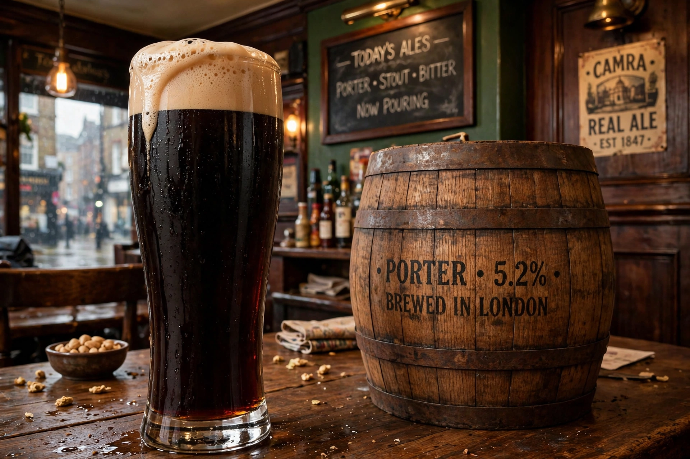

Porter (beer)
From Wikipedia, the free encyclopedia
| Porter | |
| Type | Dark beer, ale |
|---|---|
| Origin | London, England, early 18th century |
| Colour | Dark brown to black |
| Ingredients | Brown malts, roasted malt (later), hops, water, yeast |
| Related | Stout, Baltic porter |

A glass of porter, the dark working-class beer of Georgian London
Porter is a style of dark beer developed in London in the early 18th century. Popular with street and river porters — from whom it is said to take its name — it was one of the first beer styles produced on an industrial scale, and its strong, aged variants were called stouts, originally "stout porter".
History
Porter emerged around the 1720s, traditionally credited to brewer Ralph Harwood, who combined blends previously sold as mixtures of beers ("three threads") into a single well-hopped brown beer matured in vast vats. Its long ageing and keeping qualities suited large-scale brewing: London porter breweries such as Whitbread and Barclay Perkins were among the largest industrial enterprises of their age, and porter was exported worldwide, including to Ireland, where Arthur Guinness's brewery eventually specialised in the stout branch of the family. The 1814 Meux's Brewery vat collapse — the London Beer Flood — released over a million litres of porter into the streets of St Giles.
Characteristics and revival
Historic London porter was made from brown malt, strongly hopped and vatted for months; after 1817 Wheeler's black (patent) malt allowed brewers to use pale malt plus colouring, changing the flavour. The style declined in Britain during the 20th century and vanished for a time, but was revived from the 1970s by craft brewers in Britain and the United States, where robust porter is a craft staple. Baltic porter, a strong lager descendant, remained popular around the Baltic Sea.